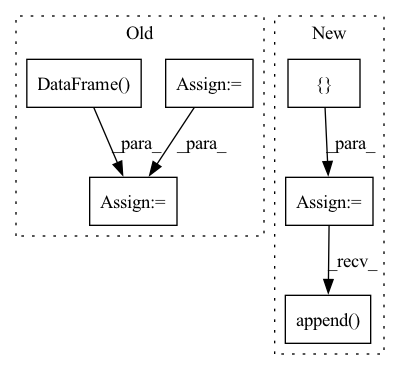

Pattern ID :2997
Before Change
ds.map(lambda example: example["subgroup_label"]).batch(
batch_size).as_numpy_iterator())
subgroup_labels = np.concatenate(subgroup_labels).tolist()
df_a = pd.DataFrame( {"example_id": ids, "subgroup_label": subgroup_labels})
bias_table = bias_table[bias_table["example_id"].isin(ids)]
predictions_merge = pd.merge(bias_table, df_a, on=["example_id"])
prob_one = (predictions_merge["subgroup_label"]
== 1).sum() / len(predictions_merge)
num_samples.append(len(predictions_merge))After Change
round_idx = []
subgroup_ids = []
num_samples = []
prob_representation = []
for idx in range(num_rounds):
ds = dataloader.train_ds
bias_table = pd.read_csv(
os.path.join(
os.path.join(output_dir, f"round_{idx}"), "bias_table.csv"))
predictions_merge = merge_subgroup_labels(ds, bias_table, batch_size)
for subgroup_id in range(num_subgroups):
prob_i = (predictions_merge["subgroup_label"]
== subgroup_id).sum() / len(predictions_merge)
round_idx.append(idx)
subgroup_ids.append(subgroup_id)
num_samples.append(len(predictions_merge))
prob_representation.append( prob_i)
return pd.DataFrame({
"num_samples": num_samples,
"prob_representation": prob_representation,
"round_idx": round_idx,In pattern: SUPERPATTERN
Frequency: 3
Non-data size: 6
Instances Fragment ID: 11555776
Project Name: google/uncertainty-baselines
Commit Name: f5b53459d654b40668528e806a24776b53864278
Time: 2022-11-03
Author: no-reply@google.com
File Name: experimental/shoshin/evaluate_model_lib.py
M Class Name: AnonimousClass
N Class Name: AnonimousClass
M Method Name: evaluate_active_sampling(5)
N Method Name: evaluate_active_sampling(4)
M Parent Class:
N Parent Class:
M File Name: experimental/shoshin/evaluate_model_lib.py
N File Name: experimental/shoshin/evaluate_model_lib.py
M Start Line: 34
M End Line: 59
N Start Line: 68
N End Line: 92
Before Change
// create the regressor features
if regressor_config is not None:
regressors = pd.DataFrame()
for reg in df.columns:
if reg in regressor_config:
regressors[reg] = df[reg]
// Make sure column order is consistent
regressors = regressors[sorted(regressors.columns.tolist())]
regressors = regressors.values
if n_lags == 0:
regressors = np.expand_dims(regressors, axis=1)After Change
regressors["additive"] = additive_regressors
if multiplicative_regressors is not None:
multiplicative_regressor_feature_windows = []
for i in range(0, multiplicative_regressors.shape[1]):
// stride into num_forecast at dim=1 for each sample, just like we did with time
multiplicative_regressor_feature_windows.append(
_stride_time_features_for_forecasts(multiplicative_regressors[:, i]))
multiplicative_regressors = np.dstack(multiplicative_regressor_feature_windows)
regressors["multiplicative"] = multiplicative_regressors
inputs["regressors"] = regressors Fragment ID: 11555779
Project Name: ourownstory/neural_prophet
Commit Name: 71ff07c9baa8002f2611b7f6d3f8f94825e59b1b
Time: 2020-09-14
Author: hansika.hewamalage@monash.edu
File Name: neuralprophet/time_dataset.py
M Class Name: AnonimousClass
N Class Name: AnonimousClass
M Method Name: tabularize_univariate_datetime(10)
N Method Name: tabularize_univariate_datetime(10)
M Parent Class:
N Parent Class:
M File Name: neuralprophet/time_dataset.py
N File Name: neuralprophet/time_dataset.py
M Start Line: 195
M End Line: 213
N Start Line: 201
N End Line: 267
Before Change
num_ambiguous = 0
ambiguous_label_name = "Observed Labels"
display = pd.DataFrame(columns=[ambiguous_label_name, *dataset.features])
for num_labels, group_data in sorted(zip(group_unique_labels, group_unique_data),
key=lambda x: x[0], reverse=True):
if num_labels == 1:
break
group_df = group_data[1]
sample_values = dict(group_df[dataset.features].iloc[0])
labels = tuple(sorted(group_df[label_name].unique()))
sample = pd.DataFrame.from_dict({"index": [labels] + list(sample_values.values())},
columns=[ambiguous_label_name] + list(sample_values.keys()),
orient="index")
n_data_sample = group_df.shape[0]
num_ambiguous += n_data_sample
if context.with_display:
display = pd.concat([display, sample])
display = display.set_index(ambiguous_label_name)
After Change
num_ambiguous = 0
ambiguous_label_name = "Observed Labels"
samples = []
display_samples = []
data = sorted(
zip(group_unique_labels, group_unique_data),
key=lambda x: x[0],
reverse=True
)
for num_labels, group_data in data:
if num_labels == 1:
continue
group_df = group_data[1]
n_data_sample = group_df.shape[0]
num_ambiguous += n_data_sample
samples.append( group_df.loc[:, [label_name, *features]].copy())
if context.with_display is True:
display_sample = dict(group_df[features].iloc[0])
ambiguous_labels = tuple(sorted(group_df[label_name].unique())) Fragment ID: 11555771
Project Name: deepchecks/deepchecks
Commit Name: b0bf20b9abb8067eac01dfc710851aac05ca4564
Time: 2022-06-29
Author: 71635444+yromanyshyn@users.noreply.github.com
File Name: deepchecks/tabular/checks/data_integrity/conflicting_labels.py
M Class Name: ConflictingLabels
N Class Name: ConflictingLabels
M Method Name: run_logic(3)
N Method Name: run_logic(3)
M Parent Class: SingleDatasetCheck
N Parent Class: SingleDatasetCheck
M File Name: deepchecks/tabular/checks/data_integrity/conflicting_labels.py
N File Name: deepchecks/tabular/checks/data_integrity/conflicting_labels.py
M Start Line: 64
M End Line: 103
N Start Line: 71
N End Line: 123